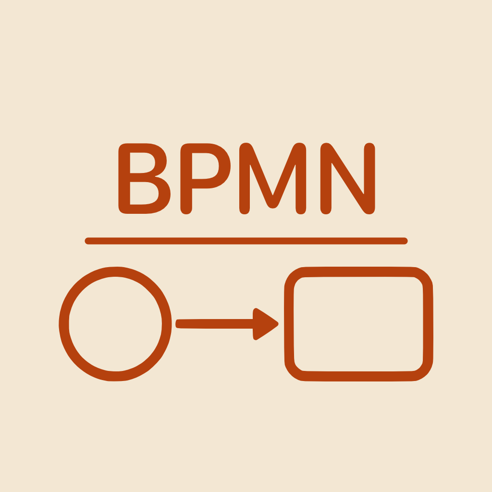

A native BPMN 2.0 diagram editor for iPhone, iPad and Mac.
Answers to common questions are below.
An editor for business process diagrams in the BPMN 2.0 notation published by the Object Management Group. Everything you draw is saved as a standard .bpmn file — plain XML that other BPMN tools can open. The app is written natively for Apple platforms: there is no web view inside it, and it needs no account and no internet connection.
On Mac and iPad the shape palette is the panel on the left. On iPhone there is no room for it, so tap the grid button in the toolbar to open it, choose a shape, then tap Done.
Pick a shape in the palette, then tap or click the canvas to place it. If exactly one element was selected beforehand, the new one is connected to it automatically and becomes the new selection — so a whole chain is built by picking shapes and tapping. To connect elements yourself, choose the Connect tool and drag from one to the other; the app picks the correct kind of connection for you — across two pools it becomes a message flow, to a text annotation an association, and a sequence flow otherwise.
On Mac, Shift-click or Cmd-click to add to the selection, or drag from empty space to draw a selection rectangle. On iPhone and iPad there is no Shift key, so press and hold an element to add it to the selection; dragging from empty space pans the canvas instead.
Select a connection and it shows handles: filled circles sit on its existing bend points, hollow ones on the middle of each segment. Drag a filled one to move that bend, drag a hollow one to create a new bend, and drag a bend onto its neighbour to remove it. Points snap to a neighbour's axis, so right angles come out without careful aiming. The endpoints can be dragged onto a different element to reconnect the flow; dropped on empty space they snap back.
Pools, lanes, groups, expanded sub-processes and annotations show handles on every corner and edge when selected. Dragging one keeps the opposite edge in place.
Undo is a button in the toolbar on every platform, and redo is beside it or in the "…" menu, depending on how much room the toolbar has. With a keyboard, Cmd+Z and Shift+Cmd+Z work as usual. Every edit is undoable, including automatic ones such as the connection created together with a new element — that pair is undone in a single step.
Open the "…" menu in the toolbar: it offers Export as PNG, Export as PDF, and Show XML, which displays the exact file contents as they will be saved.
In the "…" toolbar menu on every platform; on Mac you can also use Cmd+, or the BPMN Master menu. It holds the interface language, two switches for how labels behave over lines, and one for connection re-routing.
A connection's name is placed beside its line rather than on top of it, and slides to the free side when a shape occupies the first choice. Where a label still has to cross a line, the line is faded under the text instead of being cut, so the flow stays traceable and the word stays readable.
Both halves are separate switches in Settings, under Labels over lines, because they solve different problems: moving a label aside only rescues it from its own line, while fading also covers a label that some other connection runs through. Label positions already written into the file are left exactly as they are.
Yes — turn off Re-route attached connections in Settings. By default, moving an element recalculates the route of the connections attached to it. With the switch off, only the attached point follows the element and the rest of the route you drew is kept. A connection whose both ends move is carried along unchanged either way.
Wherever you save them. BPMN Master is a standard document-based app, so it uses the system file picker: Files on iPhone and iPad, Finder on Mac, including iCloud Drive and any other provider you have connected. On iPhone and iPad, the app's own folder is under Browse → On My iPhone (or iPad) → BPMN Master.
A BPMN file can legally describe a process without saying where anything should be drawn — the layout lives in a separate BPMNDiagram section. BPMN Master does not invent a layout for such files, because a generated one would not be what the author intended, so it explains the problem instead of guessing. Opening the file in a tool that writes a layout and saving it there once is enough to make it readable here.
Yes. The file is kept as a complete XML document and edited in place, never rewritten from scratch. Vendor extensions from other editors (Camunda, Zeebe, Signavio) and elements with no visual form survive a save untouched, even though this app does not display them.
Yes. The app is available in English, German, French, Ukrainian, Spanish, Japanese and Portuguese. By default it follows your device language (falling back to English); you can change it any time in Settings, and it applies immediately without a restart.
No. The app works entirely offline and makes no network requests at all.
iPhone or iPad with iOS or iPadOS 18 or later, or a Mac with macOS 15 or later.
Didn't find your answer, found a file that renders wrongly, or want an element the app
doesn't support yet? Write to us — we read everything, and a sample .bpmn file attached
to your message helps enormously.
Email:
volodymyr.sichka@gmail.com